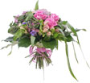
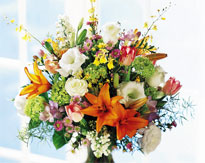

Новости цветов
Добро пожаловать на планету цветов!
В салоне-магазине "Планета Цветов" Вы сможете осуществить мечту Ваших любимых и близких! Что может доставить огромную радость обожаемой девушке, любимой маме, справедливому начальнику? Флористы нашего салона воплотят в реальность Вашу фантазию. Мы предоставим Вашему вниманию большой выбор сухоцветов, живые цветы, сувениры на любой случай жизни, которые смогут порадовать Вас и Ваших близких!
К Вашим услугам букеты, составленные из различных композиций цветов и сухоцветов. Мы создаем все необходимые условия для хранения цветов и поддержания их свежести. Но Вас может ожидать лишь одна проблема – проблема в выборе. В каталоге созданных нами цветочных шедевров можно найти: букеты, предназначенные в подарок женщине, свадебные букеты, корзины с цветами, бутоньерки и многое другое. Но мы не ограничиваемся каталогом, потому что в каждое цветочное творение, будь-то букет невесты, свадебные цветы в подарок молодоженам, «повседневный» букет шикарных роз, мужественных гвоздик, нежных лилий, гордых георгин, создается индивидуально, наши флористы вдыхают в каждую работу новую жизнь, награждая букеты индивидуальностью!
Если Вы готовитесь к торжеству по случаю Дня рождения близкого или просто хорошего человека, необходимо заострить внимание на таких нюансах, как пол, возраст, характер человека, его социальное положение тоже имеет большое значение. Если это молодая девушка, скромная и застенчивая, цветы должны быть простыми и неброскими. Женщине-начальнику подойдет букет роз или попросите показать для Вашего случая корзины с цветами. Для мужчины – необходимо подобрать строгую и мужественную композицию. Для молодой мамы с ребенком - живые растения с мелкими бутонами без запаха.
Для детей букеты должны быть яркими и жизнерадостными. Чем старше ребенок, тем больше должны быть составленные букеты. Профессиональные флористы нашего салона-магазина "Планета Цветов" помогут Вам в этом выборе, но и Вы проявляйте фантазию и интерес. Кто, как не Вы, знает, что нравится человеку, для которого предназначен букет.
Зайдя к нам в салон, Вы имеете возможность купить цветы и подарки для близких, получив при этом массу удовольствия. Ведь продажа цветов – это целое искусство и, наблюдая, как флористы